01The idea
Counting the pixels of a class gives the mapped area. It is biased by the map's errors: every pixel of forest the map calls deforestation adds to it (commission), every clearing it misses takes from it (omission). To know the real area you need a reference: what is really on the ground at a set of places, from images better than the ones the map was made from, or from a closer look at them. A sample of places, chosen at random with known probabilities, lets you estimate from those few points the map's accuracy and the area of each class over the whole map, with a confidence interval.
Janus does each step of that in the same window where you look at the series:
- StrataSplit the map into strata: its classes, its dates of change, a buffer around change.
- Sample sizeHow many points, and how many in each stratum, for the precision you want.
- DrawA stratified random sample, saved as a project (a GeoPackage).
- InterpretEach point, blind to the map: its series, its images at every date, a label.
- EstimateOverall, user's and producer's accuracy, adjusted areas, all with intervals.
- ReportTables, figures and a methods paragraph, ready for the paper.
A few words used below
- Map
- The product being assessed: a land-cover map, a map of the year of change, a Zeit result.
- Reference
- The class (and the date of change) you give a sample point from the images. It is taken as the truth.
- Stratum
- A part of the map sampled on its own: each stratum gets its own number of points, drawn at random among its pixels.
- Weight
- A stratum's share of the map's area. The estimators weigh each point by it, so a stratum sampled more densely than its area does not bias the estimates.
- User's accuracy
- Of the pixels the map calls a class, the share that really is that class (1 − commission error).
- Producer's accuracy
- Of the area that really is a class, the share the map calls that class (1 − omission error).
- Adjusted area
- The area of a class estimated from the reference labels and the strata's weights, not from the map's pixel count; given ± its confidence interval.
02The example
The screenshots follow one validation from start to end. The map is the forest loss of 2018–2023 in Global Forest Change v1.11 (Hansen et al. 2013): for each pixel, the year it lost its forest, or nothing. The place is 16 × 13 km south-west of Novo Progresso, Pará, on the BR-163 deforestation front. The reference comes from Sentinel-2: one cloud-free composite per dry season, 2017 to 2024, with six bands (blue to SWIR2), opened as a series in Janus.

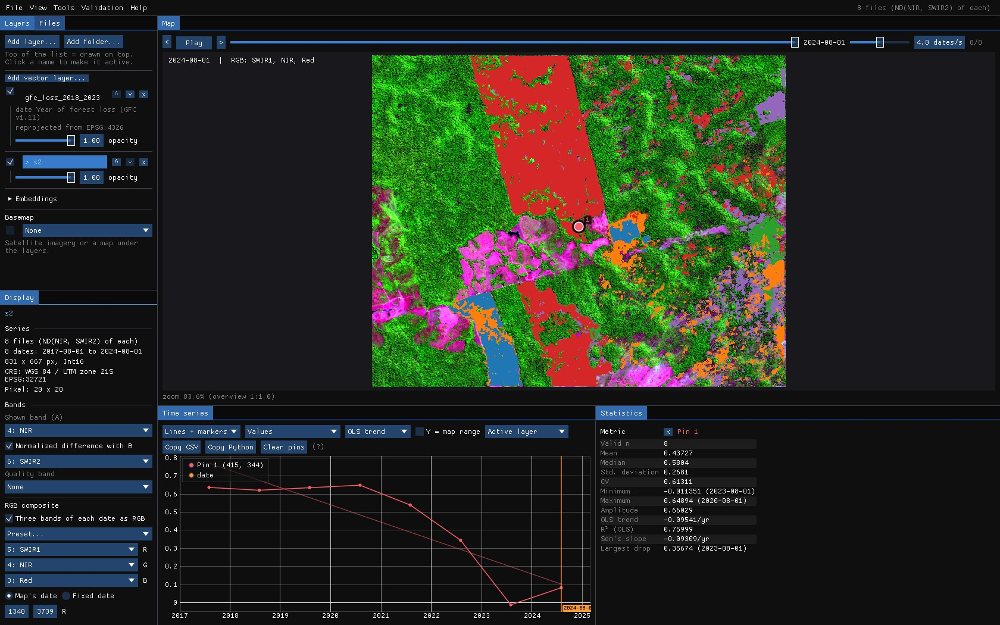
Open both as you would for any other work: the images with File → Open folder... (or jn on the command line), the map with File → Add layer: file(s).... Show the images in a composite that makes the change easy to see (the RGB composite of the Display panel), and the chart in an index that separates forest from what replaces it (here the NBR, the normalized difference of NIR and SWIR2). The map does not even need to be open: the design can read it from a file.
Reproduce it
python tools/make_tutorial_data.py data downloads the same area (about 60 MB, read in place from the public buckets of Earth Search, Global Forest Change and MapBiomas). janus --shots validation data out then runs this whole guide and saves these screenshots.
About the numbers
To keep the guide reproducible, the points in these screenshots were labelled by a simple rule on each point's NBR series (a drop from forest, and whether it grew back), not by a person looking at the images. The numbers show how to read the tool; they are not an assessment of Global Forest Change.
04Maps to stratify
Strata are what make a sample efficient. Change is usually rare: in a simple random sample of 300 points over a map with 2% of loss, about six would fall on loss, too few to say anything about it. Sampling each stratum separately lets you put 50 or 100 points on the rare classes and still estimate everything without bias, because each point counts by its stratum's weight.

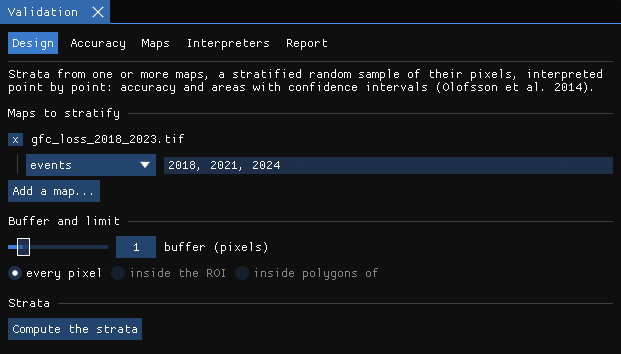
Add a map
Add a map... lists the maps already open (Zeit results, layers at their date) and A raster file.... Then say how its values are read:
- classes: each value is a class (a land-cover map, a TWDTW or SOM result). Its classes become the strata. Tick the ones that are change; that matters for the buffer and for several maps.
- intervals: ranges of a continuous value, with their edges, e.g.
-1, -0.1, 1for a magnitude, and which ranges are change. - events: the value is the date of a change (LandTrendr's year of detection, a loss year). Above zero is change; zero and no data are not. With periods (
2018, 2021, 2024), each period becomes a stratum of its own: here 2018–2020 and 2021–2023.
With several maps, the strata are their agreement: one stratum for each number of maps that call a pixel change (change in 2 of 3 maps...). A good design when you will compare the maps later.
Buffer
The pixels without change within N pixels of a change become a stratum of their own. The changes a map misses are mostly next to the ones it found (the edge of a clearing mapped too small, a clearing of the year after). Without a buffer those few omission errors fall in the huge stratum of no change, where each point weighs a lot, and they inflate the interval of the area of change. A handful of points in the buffer makes the area much more precise (Olofsson et al. 2020).
Limit
every pixel of the map, inside the ROI drawn on the map, or inside polygons of a vector layer you opened (a municipality, a biome, a study area).
05The strata
Compute the strata reads the map once at full resolution, in the background. The result is a raster of strata, opened as a layer, and a table with each stratum's pixels, area (in hectares, on the sphere for a geographic CRS like this one) and weight.

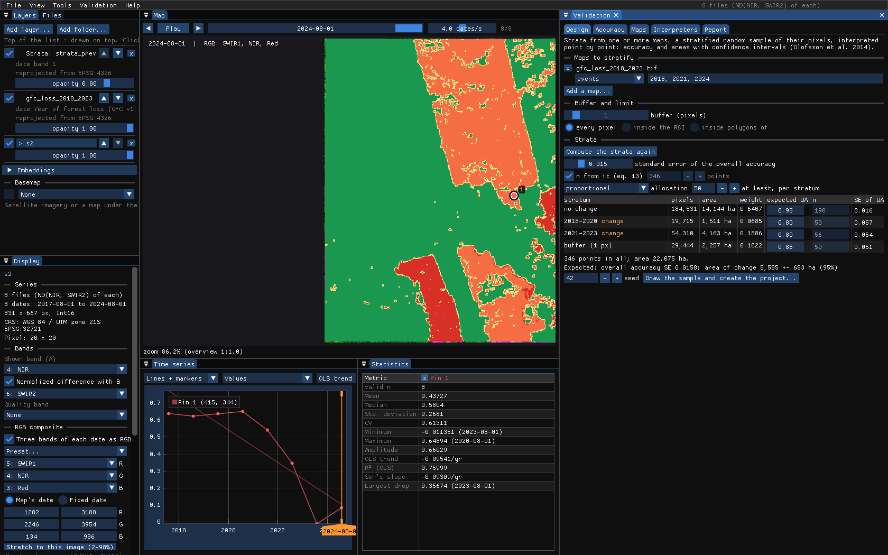
If you change the maps, the buffer or the limit afterwards, the panel says so (the maps or the limit changed) and the sample cannot be drawn until the strata are computed again.
06Sample size and allocation

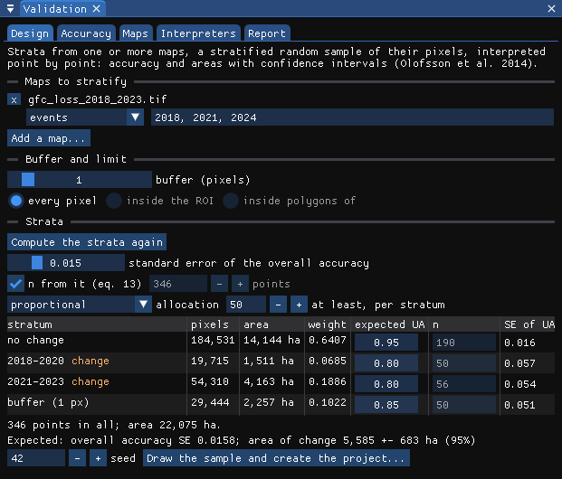
- Standard error of the overall accuracy: the precision you want. With n from it (eq. 13) ticked, the number of points comes from equation 13 of Olofsson et al. (2014), from the strata's weights and the user's accuracy you expect of each. Untick it to give the number yourself.
- Expected UA (in the table): the user's accuracy you expect of each stratum. Hard classes (change) 0.6–0.8, easy ones 0.9–0.95. It sets n and the Neyman allocation; guess from a quick look, or from a pilot sample.
- Allocation: proportional to the strata's areas, equal in each, Neyman (to area × the expected standard deviation), or by hand in the n column. With at least, per stratum, the rare strata get a floor: Olofsson et al. advise 50 to 100 points for the accuracy of a rare class.
Under the table, Janus shows the errors this design should give if each stratum's accuracy is as expected: the standard error of each user's accuracy, of the overall accuracy, and the interval of the area of change. Change the numbers until those are good enough for your purpose, before drawing anything.
07Drawing the sample
Draw the sample and create the project... asks where to save the project, a GeoPackage, and draws the points at random among each stratum's pixels, at the pixels' centres. The strata raster is saved beside it. The seed makes the draw repeatable: the same strata, sizes and seed always give the same points.

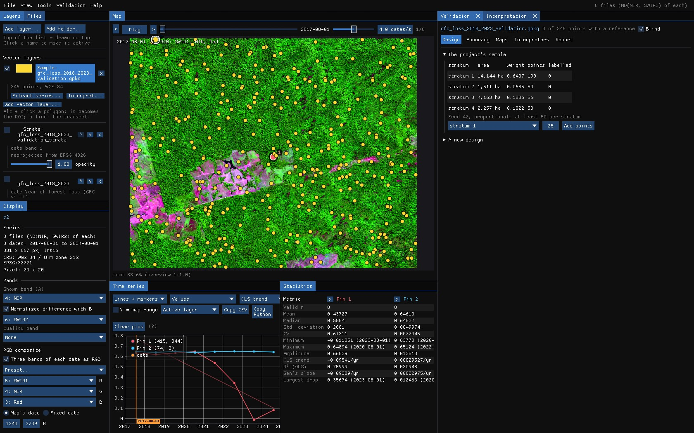
The project is an ordinary GeoPackage; open it in QGIS, keep it with the paper's data. Its tables are samples (the points, with the reference label of each once there is one), labels (every label of every interpreter, with its date, confidence and notes), strata and project (the design, the maps assessed and how their classes read the labels).
The interpretation starts at once, blind: the maps being assessed and the strata are not drawn, and the points are coloured only by their state. Knowing what the map says sways the reference toward it; the blind mode keeps that from happening. Blind is a checkbox in the panel; it is better left on until the last label.
Later, Add points (top of the Design tab) draws more points in one stratum, among its pixels not yet sampled. The sample stays a stratified random sample: useful when a rare class's accuracy is still too uncertain.
08Interpreting the points
The Interpretation panel takes the points one by one, as TimeSync does. The map goes to each point and outlines its pixel, the chart shows its series (a pin), and the Chips panel shows a small window around it at every date.

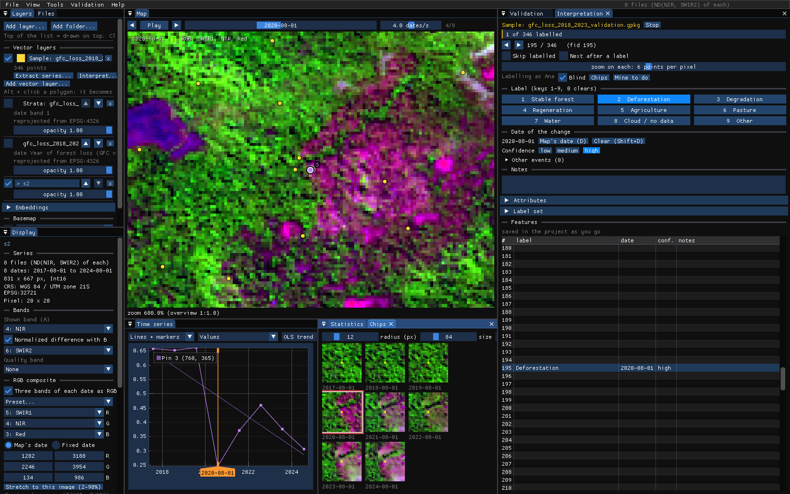

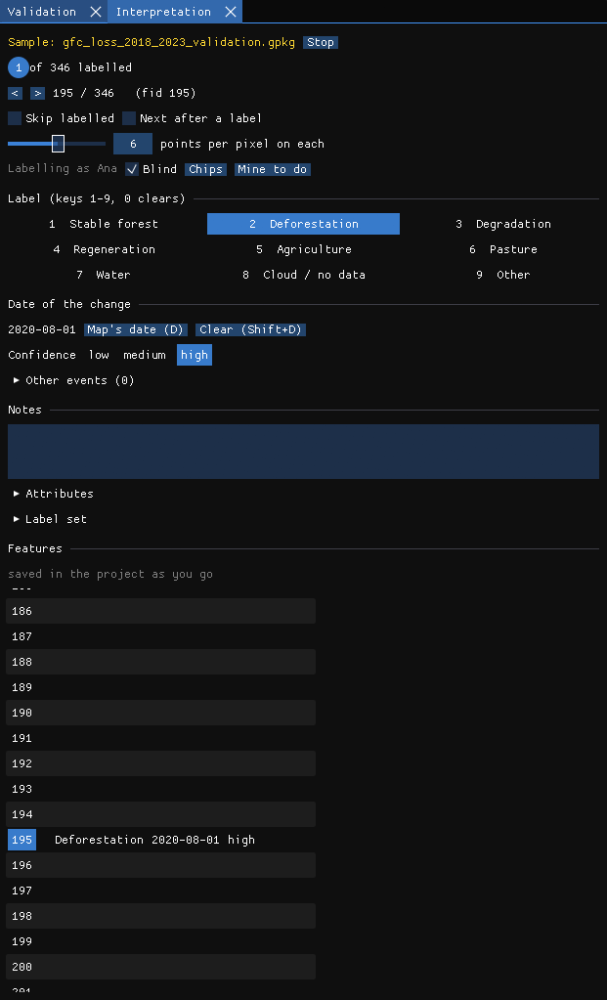

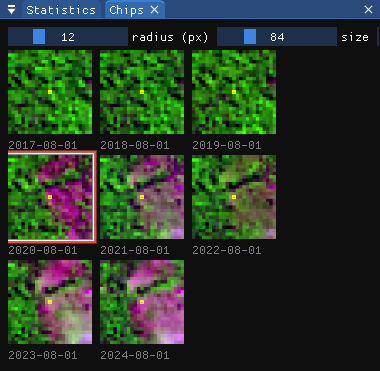
The keys
| Key | What it does |
|---|---|
| N / Shift+N | Next / previous point (also Page Down / Page Up). Mine to do keeps only the points you have not labelled. |
| 1–9 | A label of the label set: Stable forest, Deforestation, Degradation, Regeneration, Agriculture, Pasture, Water, Cloud / no data, Other (edit it under Label set). 0 clears it. |
| ← / → | The previous / next date on the map; a click on the chart or on a chip goes to its date. |
| D | The date of the change is the date on the map (double click a chip does the same). Shift+D clears it. |
| Shift+1 / 2 / 3 | Confidence: low, medium, high. |
| E | Another event at the map's date: a point degraded in 2019, then cleared in 2022, keeps both. |
Label what is on the ground, not what the map says: the class, and for a change the date it shows up. Labels are written to the GeoPackage a second after each change, so closing Janus loses nothing. If an image cannot tell (clouds, a pixel on an edge), say so with Cloud / no data or Other and a note: those points are left out of the estimates, and the report counts them.
Chips
The chips use the active layer's colours, or its RGB composite. One per year keeps the date nearest the map's day of the year when the series has many dates. The next points' chips are read ahead, so moving on with N is immediate.
09Accuracy and areas
The Accuracy tab is recomputed with every label: you can watch the estimates settle as you go. Choose the map at the top (a project can assess several) and the confidence level of the intervals (95% by default).

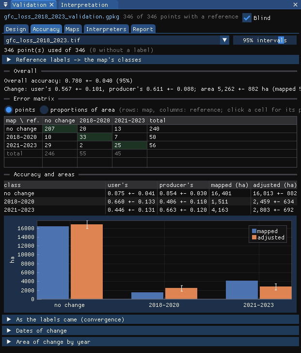
Reading it
- Overall accuracy 0.780 ± 0.040: the share of the map's area that is right, ± the half-width of its interval.
- Change: the user's accuracy of change 0.567 ± 0.101 (of what the map calls loss, how much is loss), its producer's accuracy 0.611 ± 0.088 (of the real loss, how much the map found), and the adjusted area of change, 5,262 ± 882 ha, against the 5,674 ha the map counts.
- The error matrix: rows are the map, columns the reference. In points it counts the sample; in proportions of area each cell is the estimated share of the map's area, the matrix the estimators work on. Click a cell and the Interpretation panel lists its points, so you can go through the errors one by one and check your labels.
- Accuracy and areas: for each class, user's and producer's accuracy, the mapped area and the adjusted area ± its interval, also as a chart. When the interval of the adjusted area does not contain the mapped area, the map's pixel count is biased beyond chance.
In the example, the total area of loss the map counts (5,674 ha) is inside the interval of the adjusted area, but the two periods are not. The map has 1,511 ha of loss in 2018–2020 where the reference estimates 2,459 ± 634 ha: it misses early loss (producer's accuracy 0.41). It has 4,163 ha in 2021–2023 against 2,803 ± 692 ha: a good part of what it dates to those years is not loss in the images, or is older loss (user's accuracy 0.45). The total looks right only because the two errors cancel out, and only the strata by period show it.
From labels to the map's classes
The label set describes the ground; the map has its own classes. Reference labels → the map's classes says how each label reads for this map. Janus guesses it from the names; for a map of events, loss and disturbance labels are change. Labels like Cloud / no data are left out.

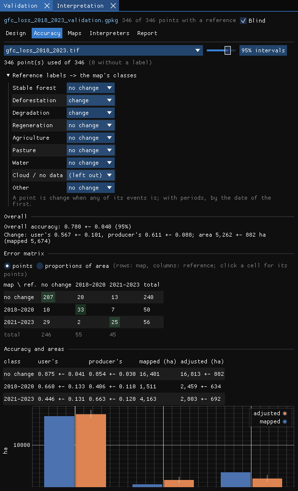
10More from the labels
As the labels came
The estimate, and its interval, after each step of the labelling. It answers have I labelled enough?: when the interval of what you need (the overall accuracy, or the area of a class) is narrow enough, you can stop, or add points where it is still wide.
Dates of change
For a map of events, the points both the map and the reference call change are compared by date: the share within ± k years (the tolerance) and the histogram of the differences. Here the reference year is the first dry-season image that shows the clearing, so a loss mapped in a given year often shows in the next image: the histogram leans to −1.

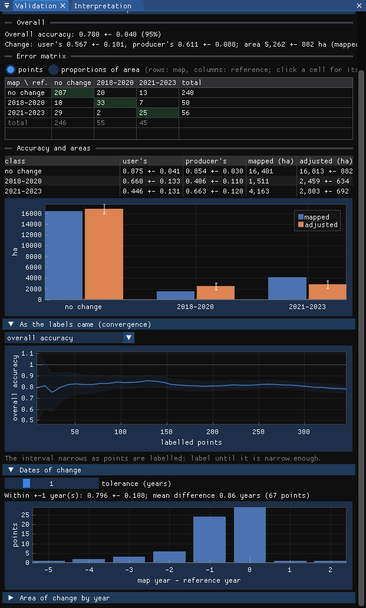
Area of change by year
From the reference alone: the area whose first change falls in each year, ± its interval. The map's dates are not used, only its strata, so this is the series of loss to report, with the uncertainty that comes with it.

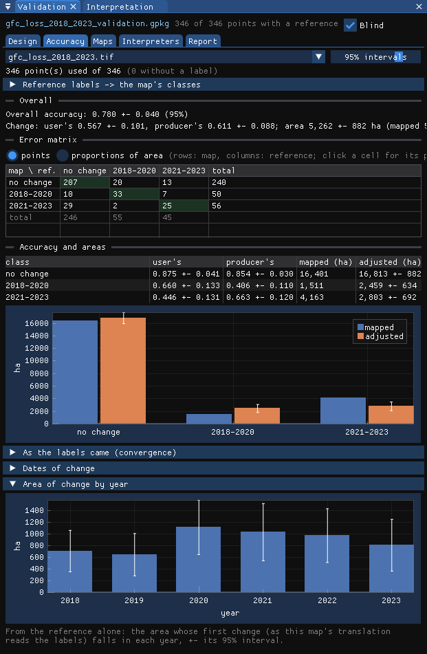
Right and wrong on the map
Once the interpretation is done, untick Blind: the map and the strata come back, and in the Interpretation panel the points can be coloured by stratum or right / wrong for the selected map. The errors often cluster (along roads, at the edges of clearings), which tells you where the map struggles.

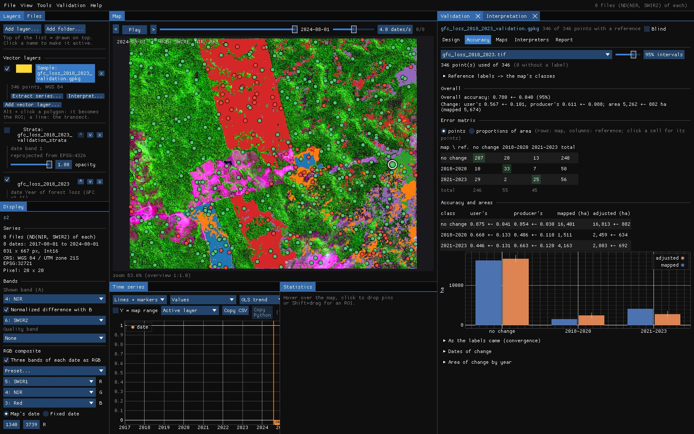
11One sample, many maps
The reference labels describe the ground, so the same sample can assess any other map of the same area: another product, a LandTrendr or CCDC result, last year's version of your own map. In the Maps tab, Assess another map... adds one; it is read at the points and its areas over the project's strata. The estimators weigh the points by the strata the sample was drawn from (Stehman 2014), so a map other than the one stratified is assessed without bias, only less precisely.

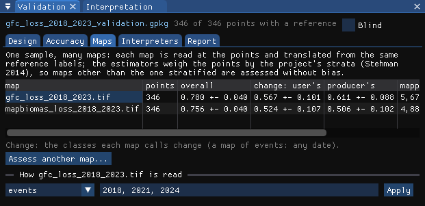
Here the second map is the loss of forest in MapBiomas Collection 9 over the same years. Note the last column: the adjusted area of change is the same for both maps, 5,262 ± 882 ha. It comes from the reference labels and the strata, not from the map, so a better map does not change the estimate of the area; it changes how far its own pixel count is from it (5,674 ha for one, 4,889 ha for the other).
Click a map's name to see its Accuracy tab; set how it is read (classes, intervals, events and their periods) under the table.
12Several interpreters
Two people reading the same images do not always agree, and how often they agree is worth reporting. Labels are kept by interpreter: your name is in File → Settings... (by default your login). Save a copy for an interpreter... writes a copy of the project (with its strata raster) for a colleague to label in their own Janus; Merge labels from a copy... brings their labels back, point by point, the newer kept.

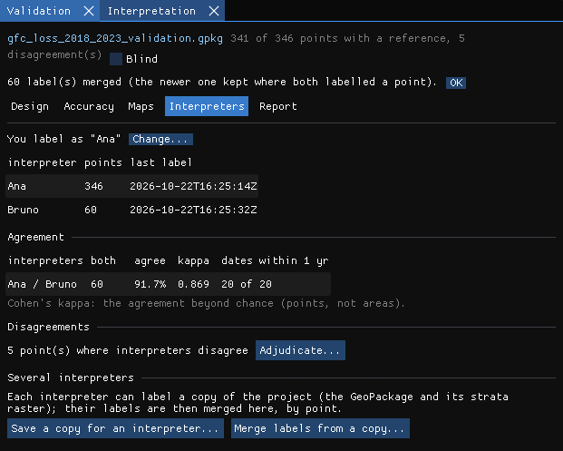
The tab shows each pair's agreement on the points both labelled, Cohen's kappa (the agreement beyond chance) and how often their dates are within a year. Adjudicate... goes through the disagreements: the others' labels are shown, and the label you give settles the point (it is kept as the adjudicated label, theirs stay as they were).

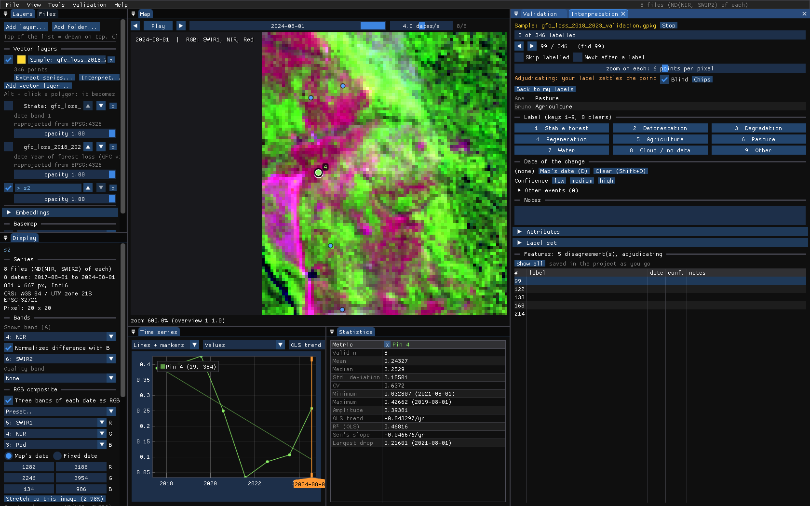
13The report
The Report tab writes a methods paragraph from the project (the strata, the points per stratum, the allocation, the seed, the number of interpreters and of labelled points, the estimators), with its references, ready to copy into a paper.

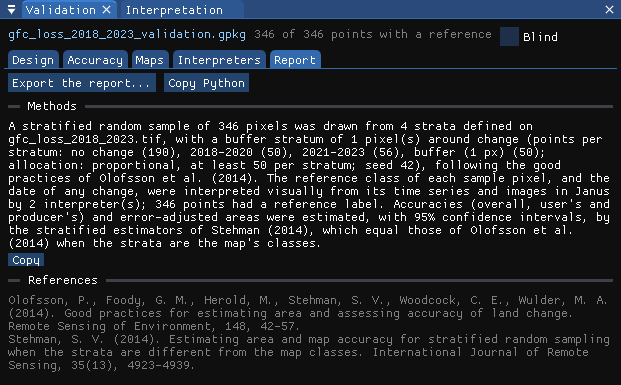
Export the report... writes to a folder a report.html (the design, the comparison of the maps, each map's error matrix, accuracies and areas with figures, the area of change by year, the interpreters' agreement, the methods and the references) and a CSV of every table, for your own figures.

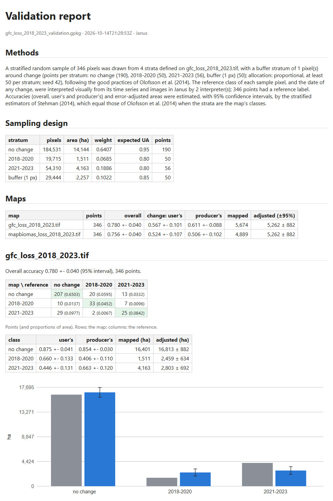
Copy Python copies the zeit.accuracy call that computes the same estimates from the project's GeoPackage and rasters: a check that does not depend on Janus, and a start for scripts of your own.
14Good practice
- Decide the design before looking at the results. Strata, sample size and seed are part of the method; drawing again until the numbers look good is not a random sample any more. To be more precise, add points in a stratum.
- Give rare classes enough points. 50 to 100 per stratum of change, whatever a proportional allocation would give them.
- Use a buffer for maps of change. It is where the omission errors hide.
- Stay blind. Untick it only when every point has a label.
- Use better data for the reference than for the map: a denser series, finer images, the basemap, field data. Interpreting the same images the map was made from mostly tells how well the algorithm read them.
- Report the intervals. An area of change is the adjusted area ± its interval, not the pixel count.
- Keep the project. The GeoPackage holds the points, every label and the design: anyone can recompute the estimates, in Janus or with
zeit.accuracy.
15References
- Olofsson, P., Foody, G. M., Herold, M., Stehman, S. V., Woodcock, C. E., Wulder, M. A. (2014). Good practices for estimating area and assessing accuracy of land change. Remote Sensing of Environment, 148, 42–57.
- Olofsson, P., Arévalo, P., Espejo, A. B., Green, C., Lindquist, E., McRoberts, R. E., Sanz, M. J. (2020). Mitigating the effects of omission errors on area and area change estimates. Remote Sensing of Environment, 236, 111492.
- Stehman, S. V. (2014). Estimating area and map accuracy for stratified random sampling when the strata are different from the map classes. International Journal of Remote Sensing, 35(13), 4923–4939.
- Hansen, M. C. et al. (2013). High-resolution global maps of 21st-century forest cover change. Science, 342, 850–853. Data: Global Forest Change 2000–2023 v1.11.
- Souza, C. M. et al. (2020). Reconstructing three decades of land use and land cover changes in Brazilian biomes with Landsat archive and Earth Engine. Remote Sensing, 12(17), 2735. Data: MapBiomas Collection 9.
- Sentinel-2 L2A: Copernicus Sentinel data, processed by ESA; cloud-optimized GeoTIFFs from Earth Search (Element 84).